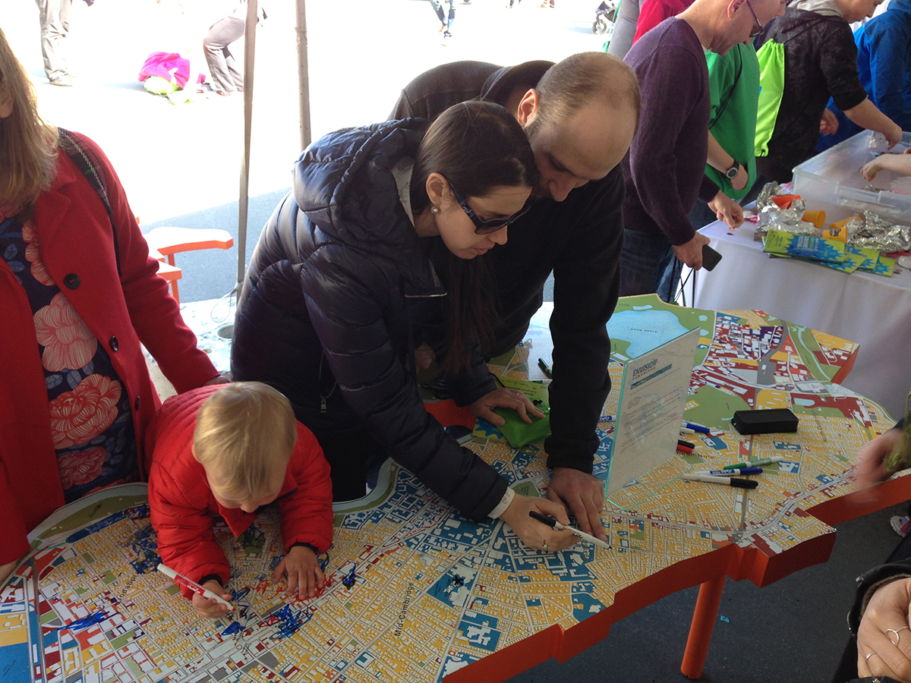

What did the Cambridge community say were their favorite and least favorite places? Where do people want to see change? Comments are included from those who suggested specific feedback.
Learn more.See the data at Cambridge's Open Data portal.
Not every point or area includes a specific comment.Envision Cambridge spent its first year collecting feedback using our Mobile Engagement Station, an interactive model of the city. It features a 3D model showing the buildings in the city and a map of Cambridge that you can write or draw on directly to highlight places and provide ideas.
See the data at Cambridge's Open Data portal.
Envision Cambridge spent its first year collecting feedback using our Mobile Engagement Station, an interactive model of the city. It features a 3D model showing the buildings in the city and a map of Cambridge that you can write or draw on directly to highlight places and provide ideas.
Not every point or area includes a specific comment.
See the data at Cambridge's Open Data portal.